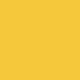

- 루미르 BI 리디자인
- LUMIR BI Redesign
- 제작 기간 : 2021 . 04 . 30 ~ 2021 . 05 . 31
기여도 : 개인 100%
사용 프로그램 : Adobe Illustrator / Adobe Photoshop
- 루미르는 그들만의 기술로 세계에 빛이 부족한 각 곳에 빛을 전달하는조명 브랜드이다.
기존의 로고는 LUMIR라는 로고타입으로만 이루어져 있어, 기존의 로고를 보았을 때
기존의 로고는 모던한 느낌을 주지만 블랙 컬러를 사용하여 어두운 느낌을 받아,
조명 브랜드와는 맞지 않는다고 생각했습니다.
로고타입으로만 이루어져 있는 로고에서 심볼을 추가하여
조명 브랜드임을 로고를 보고 알 수 있도록 디자인 하였다.
-
 Grid System
Grid System
- C : 85%
M : 44%
Y : 0%
K : 76%

- C : 0%
M : 18%
Y :76%
K : 4%
-
 BLACK & WHITE POSITIVE
BLACK & WHITE POSITIVE
- BLACK & WHITE NEGATIVE
- COLOR POSITIVE
- COLOR NEGATIVE